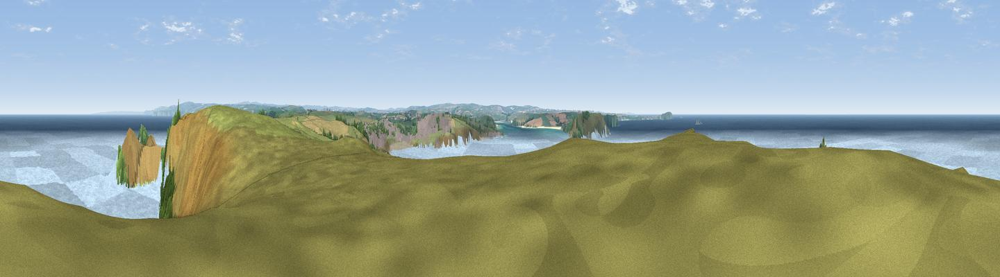

Pentire Point
#5394 in England · top 17% of its area beats it · near New PolzeathWhere it is
The exact computed spot (SW 92559 80536). Click the marker for map links.
The view, rendered

A 360° render of this exact spot computed from the terrain model, tree cover and land cover — summer colours, afternoon light, calibrated against photographs of famous viewpoints. Real trees, hedges and buildings will differ in detail.
The panorama
Grey silhouette: terrain skyline in each direction (720 bearings, Earth curvature and refraction included). Dashed green: skyline with trees (+15 m) and buildings (+8 m) as obstacles. Blue strip: how far the ground is visible on each bearing.
Where the view opens
Wedge length = distance to the farthest visible ground on that bearing (vegetation-aware). Rings at 10, 25 and 50 km.
What fills the view
78% water · 17% grassland · 3% woodland · 2% cropland ·
Angular shares of the visible panorama (visual magnitude), not map area. Landscape diversity 0.31 (0–1 Shannon).
Key numbers
More beautiful places nearby
The staircase of upgrades: each row has a higher view potential than everything closer. Driving times are estimates from straight-line distance, calibrated against real road routing — check an actual route before setting out.
| Place | Direction | Drive | Score |
|---|---|---|---|
| Viewpoint near New Polzeath | ENE · 1 km | ~2 min | 75.8 |
| Viewpoint near Port Isaac | E · 5 km | ~11 min | 76.5 |
| Viewpoint near Port Isaac | ESE · 7 km | ~15 min | 77.8 |
| Viewpoint near Port Isaac | E · 10 km | ~20 min | 79.7 |
| Viewpoint near Boscastle | ENE · 18 km | ~31 min | 82.0 |
| Viewpoint near Boscastle | ENE · 19 km | ~32 min | 84.3 |
| Viewpoint near Boscastle | ENE · 19 km | ~33 min | 85.2 |
| Viewpoint near Boscastle | NE · 23 km | ~38 min | 85.8 |
50.58762, -4.93190 · source: osm viewpoint · position refined by local search. Computed location — check access rights before visiting.